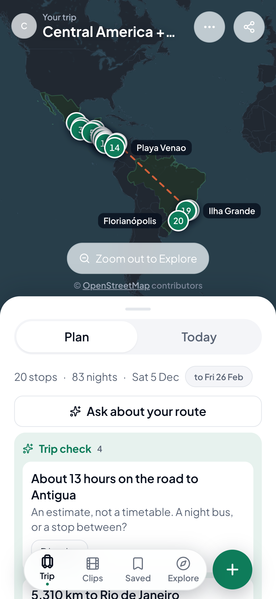
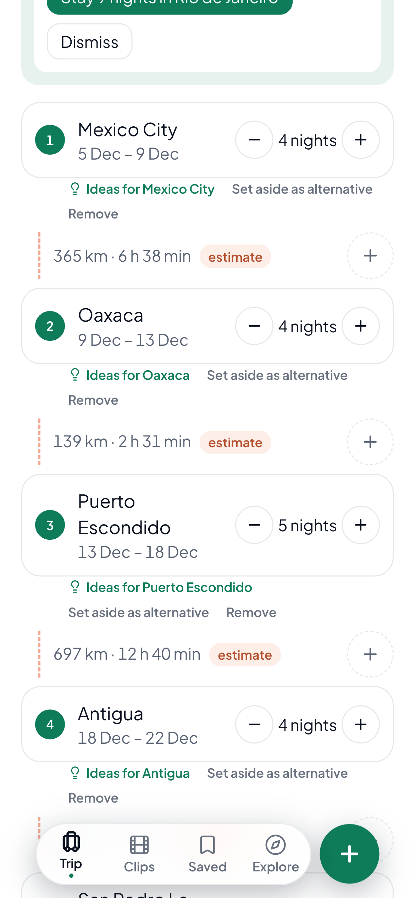
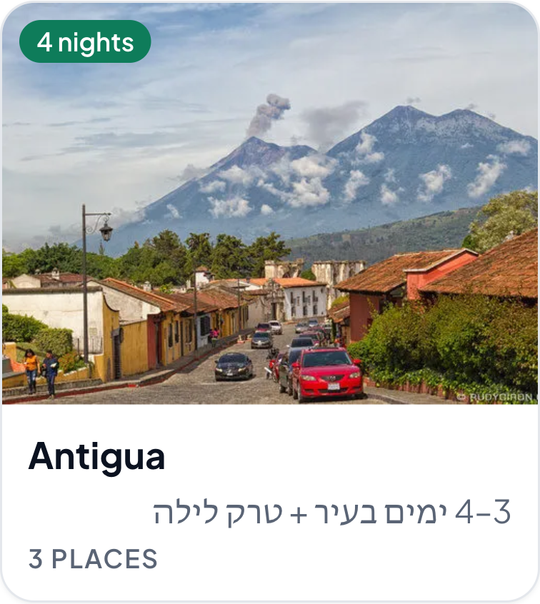
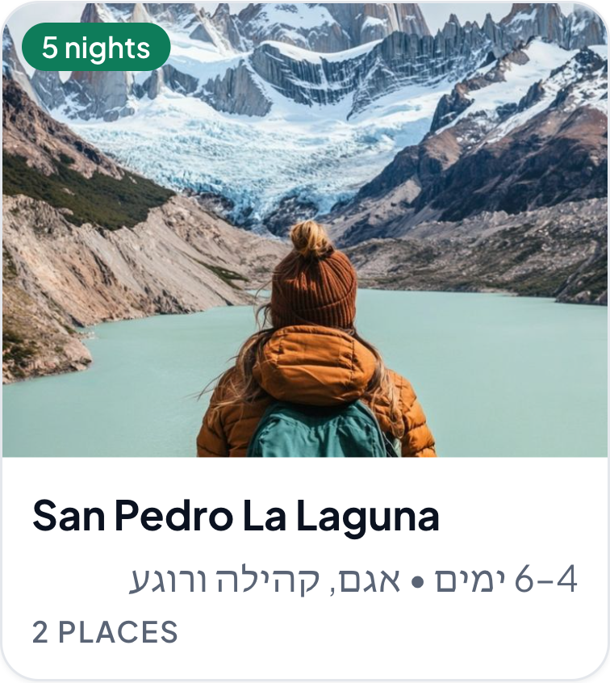
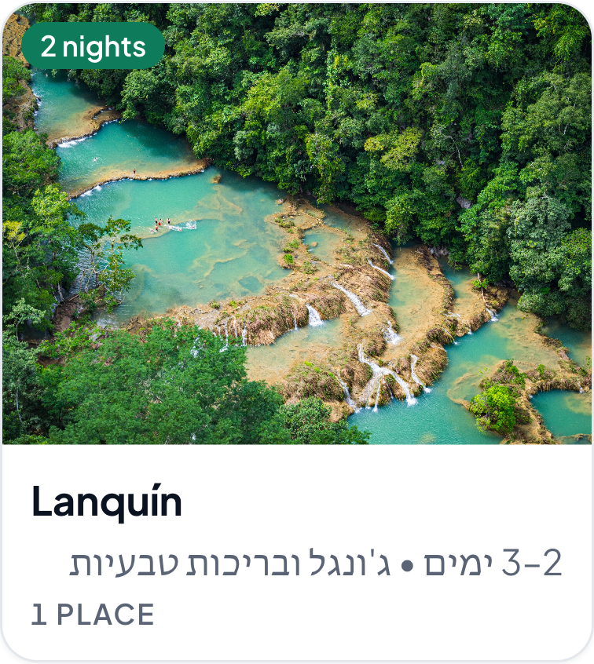
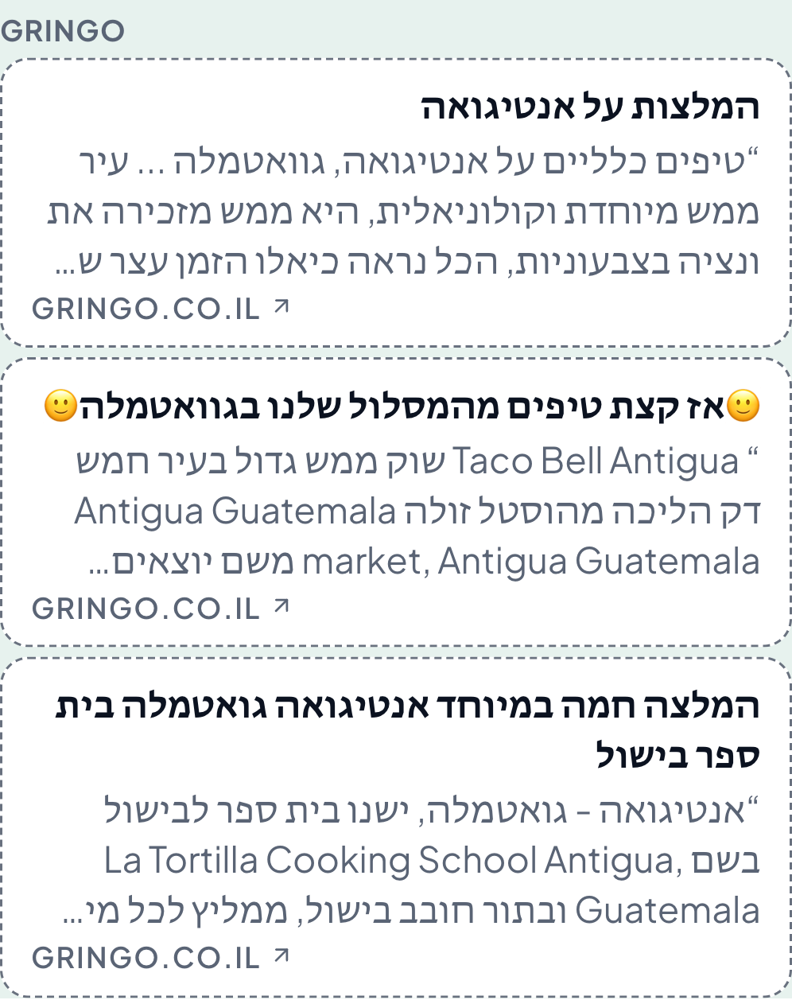
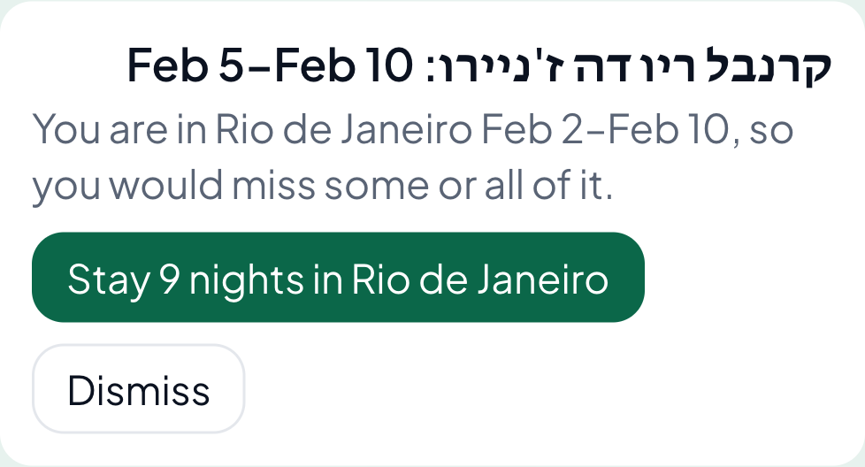

The route
Six countries.
Mexico City to Rio Carnival.
Every stop with its nights, dates derived.
Explore
Every city carries your own sentence.



Between two stops
What travellers say about this stretch
Every claim with its source.

Trip check
Notices you'd miss Carnival. Fixes it.

TripStash
Works offline. No paid API.
Found clips are never counted as yours.